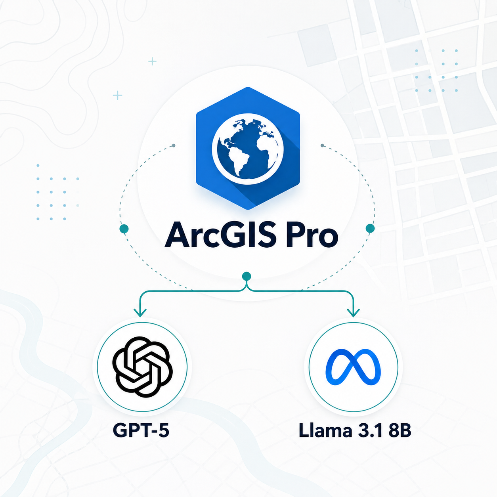

MGIS Capstone Project
Geo Copilot: Natural Language GIS Tool
An ArcGIS Pro script tool exploring how large language models can turn plain-English GIS requests into reviewable geoprocessing workflows using ArcPy, active map context, and controlled tool definitions.
ArcGIS ProArcPyGPT-5Llama 3.1 8B
View GitHub →